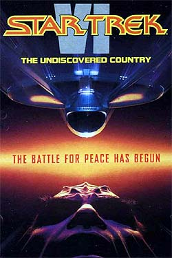
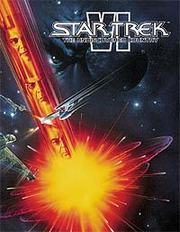
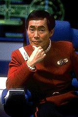
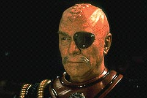

|
A
Despedida de um Mito
 "Jornada
nas Estrelas VI - A Terra Desconhecida" foi a despedida da Srie
Clssica das telas de cinema. Ela marcou o fim de uma etapa
vitoriosa de 25 anos como um fenmeno singular da indstria
cultural do sculo 20. Para muitos, este , at hoje, o melhor
filme de Jornada j realizado. Porm, no era somente a tripulao
da Enterprise que estava se despedindo de sua misso no ano de
1991. "Jornada
nas Estrelas VI - A Terra Desconhecida" foi a despedida da Srie
Clssica das telas de cinema. Ela marcou o fim de uma etapa
vitoriosa de 25 anos como um fenmeno singular da indstria
cultural do sculo 20. Para muitos, este , at hoje, o melhor
filme de Jornada j realizado. Porm, no era somente a tripulao
da Enterprise que estava se despedindo de sua misso no ano de
1991.
 Eugene
Wesley Roddenberry faleceu dias depois de ter visto a ltima
manifestao de sua obra, que lhe deu muitos mritos, dinheiro e
reconhecimento, a ponto de ser considerado como o Jlio Verne do
nosso sculo.
Ele era chamado de "utopista ferrenho", turro etc., mas
soube como poucos defender os princpios bsicos de sua obra,
apesar de consider-la como uma "obra aberta", pois teve
a colaborao de muita gente talentosa para criar o universo de Jornada.
Mesmo assim, ao sair da sala de projeo com os polegares para
cima, demonstrando que aprovou o filme, listou uma srie de pontos
contrrios e mandou o seu advogado apresentar queixa judicial
contra a Paramount.
Nick Meyer tinha sido escolhido novamente o diretor e escreveu o
roteiro bsico com Leonard Nimoy. Eles tiveram algumas reunies de
preparao onde Meyer anotava todas as sugestes de Gene
Roddenberry e assentia com a cabea.
 O
resultado foi inferior ao esperado, da Roddenberry ficar furioso
com ele a ponto de gerar um serssimo bate-boca, depois contornado,
mas que deixou mgoas profundas. De todas as coisas, as mais
problemticas eram a traio de alguns oficiais aos interesses da
Federao em fazer a paz com o Imprio Klingon e o ditado Vulcano
"Somente Nixon poderia ter ido China".
Roddenberry era do Partido Democrata e nasceu, cresceu, viveu e
morreu combatendo os republicanos de Nixon. Isto era intolervel de
aparecer junto com o seu nome, sempre prximo dos ideais
progressistas e liberais do mundo contemporneo. O "Grande Pssaro
da Galxia", nascido no Texas, passou mal na Califrnia e
resolveu voar pelo Universo...
A primeira verso do filme foi escrita por Harve Bennett. Ela
contava como Kirk, Spock e McCoy se conheceram, ainda jovens na
Academia, e se tornaram amigos. Kirk j velho e prestes a se
aposentar relembrava essas coisas para os jovens cadetes.
Mas os chefes da Paramount no gostaram da idia de ter outros
atores representando os trs amigos da Enterprise e vetaram a
proposta, para desespero de Bennett, que pediu demisso e tomou um
porre para esquecer de tudo.
A proposta vitoriosa foi a de Meyer e Nimoy e era bastante prxima
do que vimos nas telas, com alguns ajustes inevitveis. Isto gerou
outra batalha judicial, por conta de Mark Rosenthal e Lawrence
Konner, que foram empurrados como participantes por um dos diretores
do estdio.
Eles deram uma de espertos e alegaram ser deles algumas das idias
que viram Nimoy e Bennett expressarem. Por esta razo na ficha tcnica
de abertura seus nomes aparecem. O filme foi feito a toque de caixa
e com o oramento apertado de US$ 25 milhes, com o objetivo de
comemorar os tambm 25 anos de Jornada.
O ttulo j tinha sido proposto por Meyer para Jornada II,
baseado em Hamlet, de Shakespeare, e caiu muito bem com o tipo de
aventura cotada. A cena de abertura da exploso da lua
maravilhosamente bem feita. O roteiro fala da misso de despedida
da Enterprise e da construo do futuro. O fim do trabalho de uma
equipe muito bem sucedida em sua carreira, a ponto de transformar
sua nave em nave capitnea e no prprio smbolo da Frota Estelar.
Eles so convocados ao Quartel-General da Frota para receber ordens
de conduzir o chanceler Klingon, Gorkon, para uma viagem de negociao
do tratado de paz com a Federao, depois de perderem a sua
principal fonte de energia na lua Praxis. Aqui est explcita a
relao com a ex-URSS, j que "Praxis" um dos
conceitos fundamentais da filosofia do marxismo-leninismo, adotado
durante anos por aquele pas. Ao mesmo tempo, a figura de Gorkon
uma aluso ao empenho de Mikhail Gorbatchev em acabar com a Guerra
Fria entre EUA e URSS, que durou vrias dcadas.
Kirk empurrado para esta situao, embora no goste dos
Klingons, responsveis pela morte de seu filho David. O capito
assume uma postura relutante no incio, mas convencido por Spock
de que ele o mais indicado para comandar essa misso. Assim,
levado a superar seus traumas em funo de um bem maior e coroar a
sua carreira com um grande feito. Junto com Spock, ele debateu sobre
a aposentadoria iminente, cujo significado semelhante expulso
do paraso, numa cena tocante no alojamento do Vulcano. Mas a situao
muda completamente com o assassinato do chanceler. Ele se oferece
como refm para no prejudicar as negociaes, julgado,
condenado quase sumariamente como preso poltico e confinado a um
asteride penal Klingon junto com o Dr McCoy. Da, articula um
plano de fuga e salva a ptria mais uma vez, impedindo o xito dos
traidores da Federao e do Imprio Klingon que no queriam a
paz.
Como deveria ser, dele a fala final do filme, em aluso ao
passado, presente e futuro da Enterprise, dando a deixa para Picard
e a Nova Gerao.
Spock o mentor intelectual da negociao de paz, j admitindo
sua habilidade diplomtica posteriormente desenvolvida na unificao
tentada com o Imprio Romulano. Desse modo, segue o caminho de seu
pai, o embaixador Sarek. Mas seu lado humano se sente responsvel
por ter metido seus amigos numa encrenca. Por isso, empreende uma
operao de resgate para libert-los, ao mesmo tempo em que vai
atrs dos lderes do motim.
Sua decepo aumenta ao saber que sua pupila, a tenente Valeris
(Kim Katrall), faz parte da trama. Depois de tudo resolvido, dele
a melhor forma de expressar o sentimento de perplexidade de toda a
tripulao da nave ao receber a ordem de voltar definitivamente
para a Terra: "Se eu fosse humano, diria, vo para o
inferno." Simplesmente genial!!!
McCoy segue passo a passo o caminho de seus companheiros, depois de
ter tentado salvar a vida do chanceler. Sente que est ficando
velho e cansado mas persiste em participar ativamente, livrando Kirk
da morte, buscando os culpados, ajudando a prend-los e at
"operando" um torpedo fotnico lanado contra a nave
Klingon.
 Os
personagens coadjuvantes tm participao mais efetiva. Sulu o
capito da Excelsior e foi fundamental para o desfecho bem-sucedido
da misso de paz. Junto com ele est a ex-ordenana Janice Rand,
agora no posto de comunicaes. A tenente Uhura abre e fecha as
comunicaes muito bem, mas tem que aprender a falar Klingon, a
fim de driblar um posto de vigilncia na entrada da Zona Neutra.
Scotty quase arrebenta os motores da nave, mas consegue as provas
escondidas. Afinal de contas, mesmo com um diagrama na mo, ningum
conhece melhor o desenho da nave do que ele. Chekov conduz a
investigao a bordo e prende os criminosos, mas comete uma grande
gafe politicamente incorreta no jantar de confraternizao com os
Klingons. Foi vtima do efeito da cerveja romulana.
 Da
parte dos Klingons, o general Chang o mximo de vilo e
contraponto --e ao mesmo tempo complemento-- dos oficiais da Federao.
Tinha mesmo que ser interpretado pelo grande Cristopher Plummer. Ele
merece. A filha do chanceler e o prprio eram menos expressivos,
mas importantes desde o incio, participando bem do caso.
No podemos deixar de mencionar nosso querido Michael Dorn,
interpretando o coronel Worf, advogado de Kirk e McCoy. Ele o av
do tenente Worf de A Nova Gerao e Deep Space Nine.
Rene Auberjonois, o Odo de DS9, faz o coronel West, um dos traidores
da Federao. A atriz-modelo Iman a camaleide sensual que
a isca dos Klingons para deter a fuga de Kirk e McCoy.
A cena de despedida com a tripulao da ponte de p enquanto o
capito fala as ltimas palavras comovente a ponto de deixar a
gente com os olhos cheios de gua, para no falar das assinaturas
do elenco principal em cores azuis.
Afinal de contas, um grande exemplo de como a televiso e o
cinema podem ser ao mesmo tempo inteligentes e divertidos,
influenciando muita gente pelo mundo e dando um bocado de bons
frutos. Mas, afinal, algum poderia me dizer por que aquelas
panelas na Enterprise?!?
Cludio
Silveira escreve quinzenalmente sobre os filmes com
exclusividade para a Trek Brasilis
|